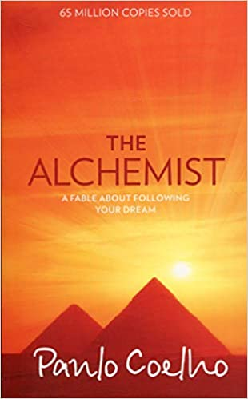

Problems? They are meant to be there everywhere. Sometimes it gets hard to solve them. I get tensed
up
and freak the fuck out if a problem is not solved. The fear of not being able to solve the problem
demotivates me constantly. Does analysis play a key role here? Does approaching a problem in various
ways really help?Does thinking about it straight and back really help? Does analysis help me find a
way
to tackle the problem in a easier way?
The Must-Listens
Podcats that you shouldn't miss
1. American Innovations
• Mission to Mars
•Thinking Machines
•Dynamite Series
2. Business Wars
• BlackBerry vs iPhone
• Uber vs Lyft
• Facebook vs Snapchat
• Tesla vs Detroit
• SpaceX vs Blue Origin
• Crypto Wars
• Tiktok vs Instagram
3. Business Movers
• Enlightment of Steve Jobs
• Howard Schultz: Saving Starbucks
• The rise and fall of Uber
Lessons to learn from Atomic Habits
Day 1
Goldilocks Rule
It is the act of staying motivated. How exactly do you stay motivated?
Imagine a situation where you play tennis. You are asked to play tennis with a four year old. What
happens here? You win every point and you get bored after say 5 or 10 shots.
Now imagine having to play with a professional tennis player. You play against Serena Williams and
hardly win a point. Here too you tend to get demotivated and in a while you quit playing.
The trick here is to play with your equals. You win some points and you lose some. You stay
motivated
and end up playing more matches. Identify your equals and improve step by step.
What does one have to do when he/she is bored??
What do I do now that boredom is killing me from inside?
1. Read books?
2. Contemplate about the future?
3. Make Websites?
4. Listent to Podcasts?
5. Go for a walk?
6. Pretend as if you're giving a speech?
7. Hit social media - Fck no
8. Breathe!
Books to Read

Try these out and lemme know how you find em
1. A brief history of time - Stephen Hawking
2. The Alchemist - Paulo Coelho
3. Atomic Habits - James Clear
4. ShadowHunters - Cassandra Claire
5. Astrophysics for people in a hurry - Niel deGrasse Tyson